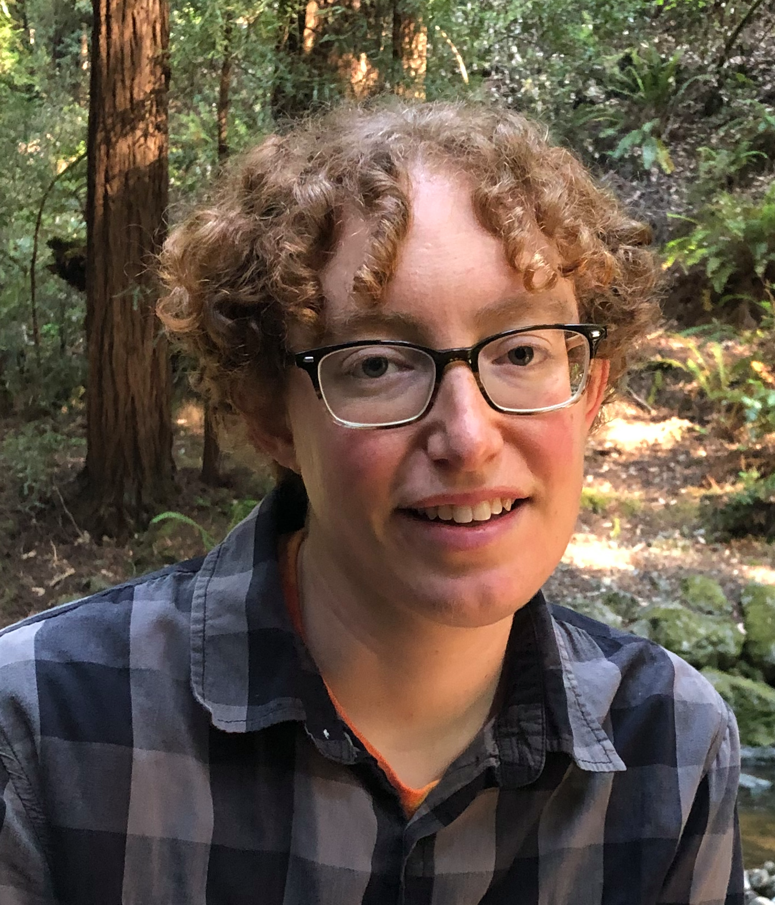
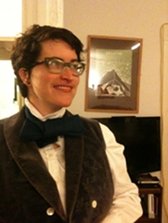

Our History
Queer Contra Dance began with a kitchen table conversation among friends. Their conclusion: the Bay Area needed a friendly, folksy venue for queers and friends to meet and contra dance. So, in April 2004, "the little dance that could" sprang forth in San Francisco, and after a few years, settled into Oakland on the other side of the bay.
In 2008, Queer Contra's weekend dance camp debuted at Monte Toyon, a camp facility in the redwoods near Santa Cruz. The camp was a wild success, and now occurs annually in spring.
Described in the press as "attitude-free" and "the friendly barn dance," Queer Contra continues to welcome everyone with its unique mix of spirited dance, hot music, and great people.
Meet the Organizers
 Mark Galipeau Says...
Mark Galipeau Says...
What's my favorite contra dance move? Gypsy! Being able to execute this move (with a man in my case), with whom you might just get a wink, or seductive smile makes it for me! Contra is a complete symbiotic organism where we all interconnect with one another in such magical ways. Truly the GLBT is fully spelled out and every one explodes [metaphorically! -ed.] in a delightful array of queer energy, all set to music. With a few semesters of international folk dance, then morphing into Ritual English Morris Dancing with The White Rats (look for us at Folsom) and Apple Tree Morris I was led to contra. Blessed be to the founding Mothers and Fathers of SFBQCD, where I found the love of my life 6 years ago. (I do love to gypsy other men, even though I am in a committed relationship!)
 Alan Kline
Alan Kline
Alan returned from college, came to Queer Contra dance, and he has not been able to stop dancing since. He now teaches, DJs, hosts, calls, and performs a variety of social dance forms. Alan has been called a dance enabler, helping dance spaces to be as friendly as possible and dancers to come back and try new dances. He is enthusiastic about consent, community, respect, role switching, and everyone having a great time. In addition to helping run Queer Contra and scheduling Queer Contra Camp, he is on the board for East Bay Waltz and has developed his own dances, including the annual Showtune Shindig, an evening of partner dance to music all from musical theater.
Laura Gorrin
Laura has been dancing in the Bay Area for their whole life. They grew up with Scandinavian folk dancing, and then started contra in high school. Laura is passionate about taking cis/heteronormativity out of social dance. They promote using gender neutral and non racist language, role switching, playing, and twirly skirts for everyone. They will also teach you cool moves if you ask. Laura currently works on Circle Left and Queer Contra Camp.
 Margaret Pigman
Margaret Pigman
Margaret started contra dancing in college and hasn't stopped since. She helped start Circle Left in 2013 in part to welcome and support younger dancers, musicians, and callers. She's happy to be part of the movement towards gender neutral calling and likes to gossip about what role names are being used at different dance series across the country.
 Yoyo Zhou
Yoyo Zhou
Yoyo began contra and square dancing in 2007 and found even more kinds of dance after moving to the Bay Area. He started calling dances at Irish ceili and progressed to contra dance calling, to contribute to making the joy that is our dance community happen and making it as inclusive as possible. In addition to organizing Circle Left, he also organizes dances with BACDS. He enjoys choreographing contra dances that challenge gender conventions.
Bex Clark
Bex is addicted to dancing. She first started dancing contra in her hometown of Miami, FL in 2001, and got hooked more deeply after moving to the East Bay in 2003. Bex has been a queer contra dance camper since 2010, and especially enjoys bird-watching between workshops. Her favorite contra moves are anything Beckett, give and take, and laugh-inducing dance partners! When it's not contra, it's all-position modern western square dance, and Scottish country dance. Bex maintains the camp website, and is camp registrar. Crikey!
Our Organizers Emeriti
 Arcadia Falcone
Arcadia Falcone
Arcadia started contra dancing in college, and seeks to channel her overcaffeinated, overstressed, and overjoyed 20-year-old self every time she dances. She attended the first San Francisco queer contra dance in 2004, and within a year had leveraged her expert command of skirt-swirling to become a power behind the throne. She loves the energy and exhilaration of queer contra, and her favorite dance moves are gypsy meltdowns, butterfly whirls, and twirling partners much taller than her. If you ask nicely, she will teach you to waltz. [It was Arcadia who created the attractive website that you're now experiencing. -ed.]
 Ben Foley
Ben Foley
Ben caught the contra bug in 1993 while living in Connecticut, where he ran across the now-defunct Hartford gender-neutral dance. Soon after he attended his first LCFD dance camp in Becket, Massachusetts and immediately recognized that contra dancing could be earthly paradise. Dismayed by the dearth of happy and wholesome gay social venues in NYC, Ben—along with Joanna Sharf—founded the New York City queer dance series in 1998, and since 2004 has been helping organize the San Francisco Bay queer contra dance.
 Jon Bartlett
Jon Bartlett
Jon is an international man of mystery known at contra dances the world over for his debonair aplomb and unique flair.
 Lori McLaughlin says...
Lori McLaughlin says...
I'm a native Californian born and raised behind the "Orange Curtain" in Southern California. I didn't start dancing until I was in my early 20's when I discovered Country Western dancing. I made the move to Berkeley in 2003 and didn't discover Contra dancing until 2009, when a friend sent me a link to the San Francisco Bay Queer Contra site. It took me another two years to get up the courage to drop in to see what it was all about. After my first dance experience, I was hooked! I especially like the open and friendly atmosphere, the patience of the more experienced dancers when showing a new dancer the ropes, and the smiles and laughter!
 Robert Riley
Robert Riley
Robert's entrée into contra was the legendary Minneapolis LezBeGay 'N' Dance. Fervent, unhinged contraphilia took hold, and after various relocations, he discovered the queer contra dancers in New York, where, once again, he could balance and swing with whatever human he pleased. Robert loves contra dancing for its unabashed joy and exuberance, and gender-free contra for dropping normalcy from the equation: everyone enters the floor as-is, to dance with whomever. Now a Calfornia resident, the SF Bay Queer Contra Dance has kept Robert a busy organizer.
 Yana Slobodenyuk says...
Yana Slobodenyuk says...
I was introduced to contra dancing at an outdoor weekend festival in Maine in the fall of 2005. Love at first dance, though I was not to experience it again for many months. I happened to come across a contra dance in Port Townsend's Fiddle Tunes festival the next year, and shortly afterwards found myself living in San Francisco. What excitement I felt at spying a little (pink?) flyer at a bookstore advertising Queer Contra—I went to that dance and (almost) haven't missed one since. I am addicted to the amazing, friendly folks that show up to our dances month after month—it truly feels like a community.
 San Francisco Bay Queer Contra Dance ()
San Francisco Bay Queer Contra Dance ()